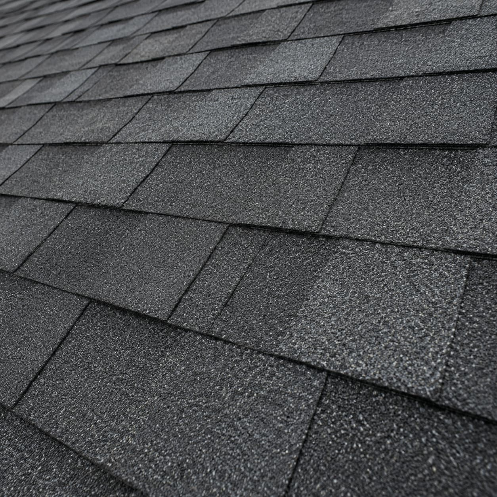

01
Asphalt shingle look
Asphalt Shingle Roofing
A common residential roof option with broad style availability and provider familiarity. Homeowners should compare shingle grade, underlayment, flashing, ventilation, installation details, and warranty terms directly with providers.
- Compare shingle grade, color, and profile.
- Verify manufacturer and labor warranty details.
- Ask what underlayment, flashing, and vents are included.